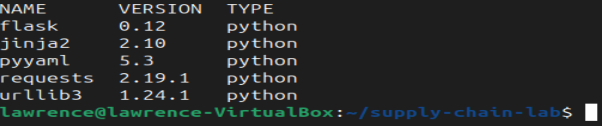
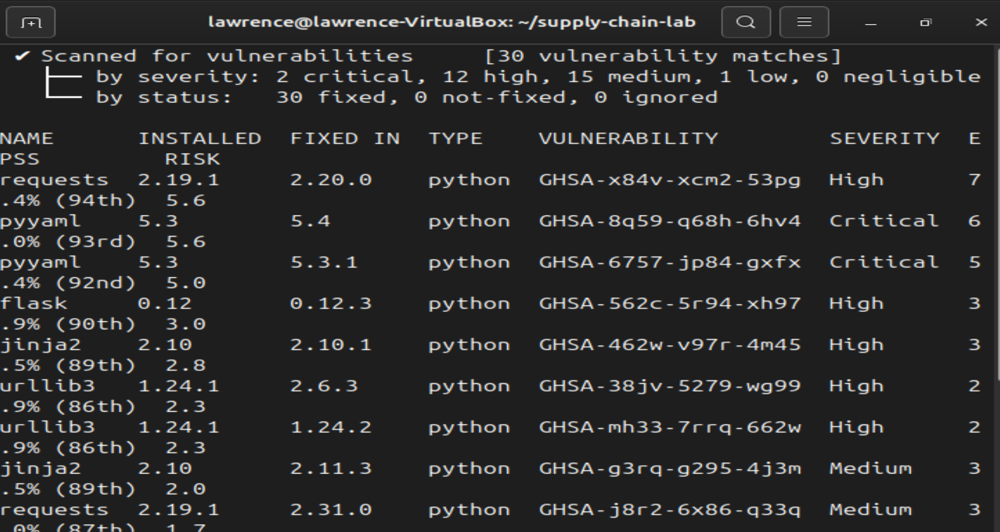
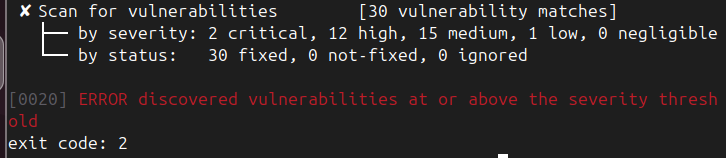
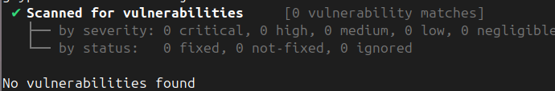
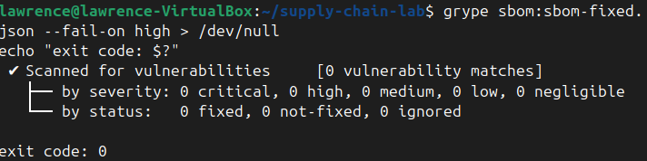
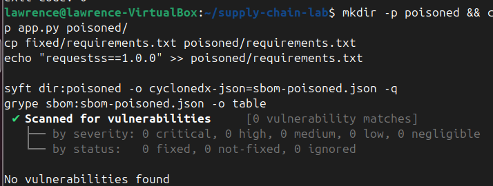
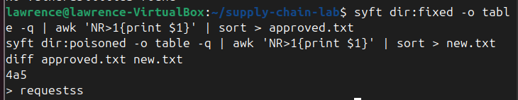

Summary
Most of the code in a modern application was written by someone else. Every library an app pulls in is a link in its supply chain, and a weak link — an old version with a known flaw, or a package that was never what it claimed to be — becomes the app's problem. Case 005 put scanning into a CI/CD pipeline. This case goes underneath that: what exactly is in the app, which of it is known to be vulnerable, and what happens when the problem is not a known vulnerability at all. I built a small app with outdated dependencies, produced a software bill of materials (SBOM — a list of every component), scanned it, fixed it, and then simulated a poisoned dependency to see what a vulnerability scanner does and doesn't catch.
Environment and stack
- Platform: Ubuntu running in VirtualBox
- Inventory: Syft — reads an application and lists its components, exporting a CycloneDX SBOM
- Vulnerability scanning: Grype — checks an SBOM against a database of published vulnerabilities, and can fail a build above a chosen severity
- Method: manifest-level scanning of a Python
requirements.txt; nothing was installed or run, so the whole analysis after the one-time database download worked offline
Phase 1: The target app and its inventory
The target is a tiny Flask app whose requirements.txt pins five deliberately old libraries: Flask 0.12, Jinja2 2.10, PyYAML 5.3, Requests 2.19.1 and urllib3 1.24.1. Syft turned that into an inventory of five components.

One limit worth stating plainly: because Syft was reading a requirements file rather than an installed environment, it listed the five pinned libraries and not the further libraries those pull in. A real SBOM generated from a built image or installed environment is more complete.
Phase 2: Scanning the inventory
Grype scanned the SBOM against its vulnerability database and found 30 known vulnerabilities across the five packages: 2 critical, 12 high, 15 medium and 1 low. All 30 had a fixed version available — none of this was unfixable, it was just old.

Phase 3: Gating the build, then fixing it
To test the result the way a pipeline would, I ran Grype with a failure threshold: --fail-on high. Because high and critical findings exist, Grype reported that vulnerabilities were found at or above the threshold and exited with code 2, the signal a CI step uses to block a build.

I then upgraded every dependency to a fixed version (Flask 3.1.3, Requests 2.33.0, Jinja2 3.1.6, PyYAML 6.0.2, urllib3 2.8.0) and scanned again. Result: 0 vulnerabilities, and the same gate returned exit code 0, meaning the build would pass.


This check was done on the manifest only: it shows the pinned versions have no published vulnerabilities, not that the upgraded app was run and tested. In a real project, upgrading across major versions (Flask 0.12 to 3.x) needs code changes and testing before shipping.
Phase 4: The poisoned dependency
A clean scan answers one question: does anything in this list have a known, published vulnerability? It does not answer whether everything in the list should be there. To test that gap, I added a made-up package name, requestss — a one-letter typo of requests, the pattern behind typosquatting attacks, where a malicious package is published under a name a developer might mistype. In this lab it was only a line in a text file: nothing was installed, downloaded or run.
Grype scanned the new SBOM and reported "No vulnerabilities found".

That result is expected, and it is the point. A newly published malicious package typically has no vulnerability entry yet, so a scanner built around known vulnerabilities has nothing to match it against. A green scan does not mean a safe dependency list.
Phase 5: Catching it
What does catch it is comparing against a list of what's approved. I kept the fixed component list as the approved baseline and compared it with the new one. The comparison showed one extra line: requestss.

In a pipeline this becomes a rule: if the SBOM contains a component that is not in the approved baseline, the change needs a human to review it before it merges. Beyond what this lab ran, two further defences are standard practice: pinning dependencies with hashes (so the installer refuses a file that doesn't match the one that was reviewed — for example pip install --require-hashes), and using a private package index for internal packages, so a public package with the same name cannot replace them. I did not run those two here.
Lessons learned
The most useful part of this project was the contrast between two clean results. The first ("0 vulnerabilities" on the upgraded app) was earned: 30 findings were fixed by upgrading. The second ("No vulnerabilities found" on the poisoned list) was a false comfort. Same tool, same message, opposite meaning. A vulnerability scanner is good at one job — finding known problems in components you already have — and is blind to an unknown or malicious component that was never reported. Defending the supply chain means layering controls: an inventory so you know what you have, a scanner for what is known, a gate so findings block builds, and an approved baseline with hash pinning so new or altered components get noticed. No single tool in that list is enough on its own.